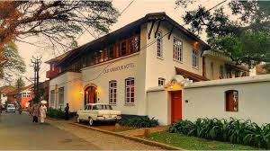

ERNAKULAM

Sprawling, residential Ernakulam is known for Marine Drive, a busy waterfront promenade where boats offer backwater cruises. The Kerala Folklore and Hill Palace museums explore local heritage through art and antiquities. Shops along Broadway and on MG Road sell fabrics, crafts, and spices, while modern Lulu Mall also has a cinema and an ice rink. Simple eateries serve Keralan specialties and South Indian seafood. ― Google
Mattanchery museum
Did you know that in ancient times, a sack of Indian black pepper was considered to be worth a man’s life? Centuries ago, merchants in Kerala were trading spices in exchange for gold and precious stones. In fact, it was the bustling spice trade that put India, especially the Malabar Coast, on the world map. In those days, Ernakulam was the centre of a historic spice route that attracted the likes of popular explorers like Vasco Da Gama and Pedro Álvares Cabral. Today, the influence of various civilizations such as Persian, Chinese, Dutch, Portuguese, Jews, French and English are evident in the art, architecture, cuisine and communities of Ernakulam. Check out the places to visit in Kochi that’ll let you live its history.
10 Places in Ernakulam you must explore
Boasting a white-sandy beach, captivating island, heritage museums, and so much more, Ernakulam encompasses an array of magnificent attractions. Visit this wondrous city in God’s own country – Kerala and have a wholesome excursion. But, before beginning your expedition make sure to check out these stunning places to visit in Ernakulam and remain spellbound.